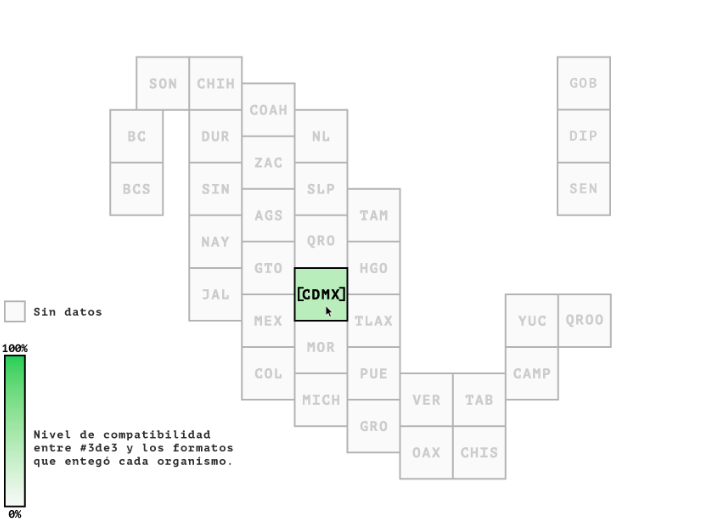
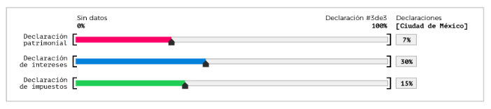

Estás en #3de3 [datos], la nueva sección de #3de3.
Aquí podrás conocer la información pública disponible ─haciendo uso de bases de datos y tecnología─ y acceder a las declaraciones patrimoniales, de intereses y fiscales de los funcionarios públicos de nuestro pais.
Datos disponibles
Selecciona los datos que quieres consultar
Revisa cuánta información de las declaraciones de intereses, patrimoniales y fiscales de cada funcionario hace pública el gobierno de cada entidad u organismo en comparación con los formatos de declaración pública de #3de3.
Recorre el mapa con el cursor para conocer a detalle la información de cada entidad u organismo.
 